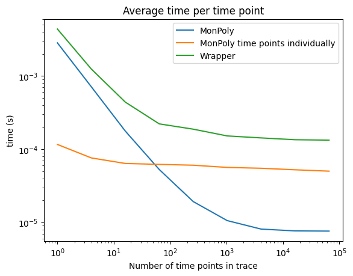
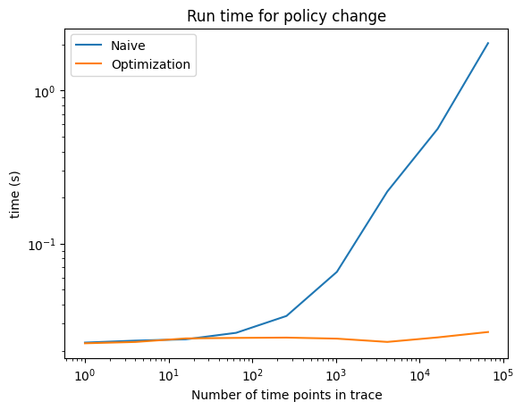

We focus on the online monitoring problem.
MonPoly is a runtime monitor. Its policies are written in metric first-order temporal logic (MFOTL), which adds temporal operators to first-order logic. Each operator carries an interval $I$ that restricts the time points relevant to it.
| Next | $\Next{I}\, \varphi$ | Always | $\Always{I}\, \varphi$ |
| Previous | $\Previous{I}\, \varphi$ | Historically | $\Historically{I}\, \varphi$ |
| Until | $\varphi \Until{I} \psi$ | Eventually | $\Eventually{I}\, \varphi$ |
| Since | $\varphi \Since{I} \psi$ | Once | $\Once{I}\, \varphi$ |
The temporal operators are on the left, the syntactic sugar built from them on the right.
The thesis defines the logic in §2.1 Metric First-Order Temporal and Dynamic Logic and introduces the tool in §2.2 MonPoly.
A time-series database is optimized for inserting and retrieving temporal data. We use QuestDB:
TIMESTAMP data type to the usual types INT, STRING, etc.More in §2.3.1 QuestDB.
| Monitor (MonPoly) | Time-series database (QuestDB) | |
|---|---|---|
| Good when | data changes often the policy changes rarely | data stays almost constant queries vary and are frequent |
| Bad when | the policy changes frequently | data changes rapidly |
We build a wrapper that logs and monitors the same data. It:
Each predicate of a MonPoly signature becomes a table, with one column per
attribute plus the time point tp and the time stamp ts. One
more table records every time point, including those without events.
CREATE TABLE P(x1 INT, x2 STRING,
tp INT,
ts TIMESTAMP)
timestamp(ts);
CREATE TABLE Q(x1 INT, x2 INT,
tp INT,
ts TIMESTAMP)
timestamp(ts);
CREATE TABLE R(x1 INT, x2 STRING,
x3 STRING,
tp INT,
ts TIMESTAMP)
timestamp(ts);
CREATE TABLE time_points
(tp INT,
ts TIMESTAMP)
timestamp(ts);P(id:int, act:string)
Q(id1:int, id2:int)
R(int, string, string)The thesis explains the mapping in §2.3.2 Time Series Databases for Runtime Monitoring.
| Monitor and log | QuestDB connection |
|---|---|
/ (info page) | /db-set-user |
/set-policy | /db-set-password |
/set-signature | /db-set-host |
/start-monitor | /db-set-pgsql-port |
/stop-monitor | /db-set-influxdb-port |
/change-policy | /db-set-database |
/get-policy | /db-get-user |
/get-signature | /db-get-password |
/reset-everything | /db-get-host |
/log-events | /db-get-pgsql-port |
/get-events | /db-get-influxdb-port |
/get-most-recent | /db-get-database |
Every endpoint is described, with example calls, in §3.2 The REST API.
The wrapper checks incoming events before they reach MonPoly, and faulty input is reported instead of stopping the monitor: fault tolerance increases compared to MonPoly alone.
Time points whose time stamps lie outside $\{\text{current time stamp}\} \oplus \RI(\phi)$ do not change the evaluation of $\phi$ at the current time point.
Let $I$ and $J$ be two intervals. Then
The relative interval of a formula $\phi$, $\RI(\phi) \subseteq \mathbb{Z}$, is defined inductively over the formula structure :
Definition 4.1 in the thesis also covers the MFODL operators.
A map from masked predicates to intervals replaces the single interval, so new operators are needed. Let $M$ and $N$ be two masked predicate maps and $T$ an interval:
$$\begin{aligned} M \Cupmerge N = {} & \{ p(l) \to (I \Cup J) \mid p(l) \to I \in M \text{ and } p(l) \to J \in N \} \\ & \cup \{ p(l) \to I \mid p(l) \to I \in M \text{ and } p(l) \in \keys(M) \setminus \keys(N) \} \\ & \cup \{ p(l) \to I \mid p(l) \to I \in N \text{ and } p(l) \in \keys(N) \setminus \keys(M) \} \\ T \Cupext M = {} & \{ p(l) \to (T \Cup I) \mid p(l) \to I \in M \} \\ T \oplusext M = {} & \{ p(l) \to (T \oplus I) \mid p(l) \to I \in M \} \end{aligned}$$The definition follows that of relative intervals; what changes is marked.
We proved that this definition is a correct approximation: it extracts all time points from a trace that are needed, and $\phi$ evaluates the same on the original trace and on the extraction.
Definition 4.11; the proof is in §4.3.1 Correctness.
On a random trace, each masked predicate keeps only the events in its own interval. Everything else in $(-60, 0]$ is skipped, although the plain relative interval would read it. An event appears in every row whose mask it matches.
The thesis shows the same picture next to §4.3 Relative Interval Extension.
Each masked predicate becomes a condition on its table; the time points table is queried with the relative interval of the whole formula.
SELECT * FROM P WHERE
(time_stamp > <NOW>-60 AND time_stamp <= <NOW>-20)
OR
(x2 = "a" AND
time_stamp > <NOW>-30 AND time_stamp <= <NOW>-0);
SELECT * FROM Q WHERE
(x2 = 2 AND
time_stamp > <NOW>-30 AND time_stamp <= <NOW>-0);
SELECT * FROM R WHERE
(x2 = "c" AND
time_stamp > <NOW>-60 AND time_stamp <= <NOW>-0);
SELECT * FROM time_points WHERE
(time_stamp > <NOW>-60 AND time_stamp <= <NOW>-0);QuestDB's answer is turned into the wrapper's JSON log format, and from there into a MonPoly log that the new monitor reads before it switches to standard input.
[{"R":[]},
{"Q":[[0,8,65536,"Thu, 01 Jan 1970 00:00:01 GMT"]]},
{"P":[]},
{"time_points":[[65536,"Thu, 01 Jan 1970 00:00:01 GMT"],
[65537,"Thu, 01 Jan 1970 00:00:02 GMT"]]}][{"predicates":[{"name":"Q","occurrences":[[0,8]]}],
"timepoint":65536,"timestamp":"1970-01-01 00:00:01"},
{"predicates":[],
"timepoint":65537,"timestamp":"1970-01-01 00:00:02"}]@1 Q(0,8);
@2 ;NAME[f1, name1] OR NAME[f2 AND f3, name2]NAME to MonPoly and updated the formula parser for NAME constructs.>remove_part <name><
>add_conjunct <name1> <name2> <formula><
>add_disjunct <name1> <name2> <formula><With names for its parts, the policy becomes
NAME[(P(x,"a") SINCE[0,30) Q(x,2)), part1] AND
NAME[(NOT (R(y,"c",z)) SINCE[20,60) P(y,z)), part2]>add_disjunct part1 part3 'NOT P(2,"b")'<(NAME[P(x,"a") SINCE[0,30) Q(x,2), part1] OR
NAME[NOT P(2,"b"), part3]) AND
NAME[NOT (R(y,"c",z)) SINCE[20,60) P(y,z), part2]The thesis reports this experiment in §5.4.1 Wrapper vs. MonPoly.

More detailed profiling is required. Possible sources of the overhead:

The thesis closes with §6 Conclusion.